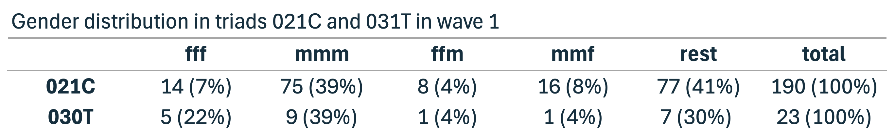
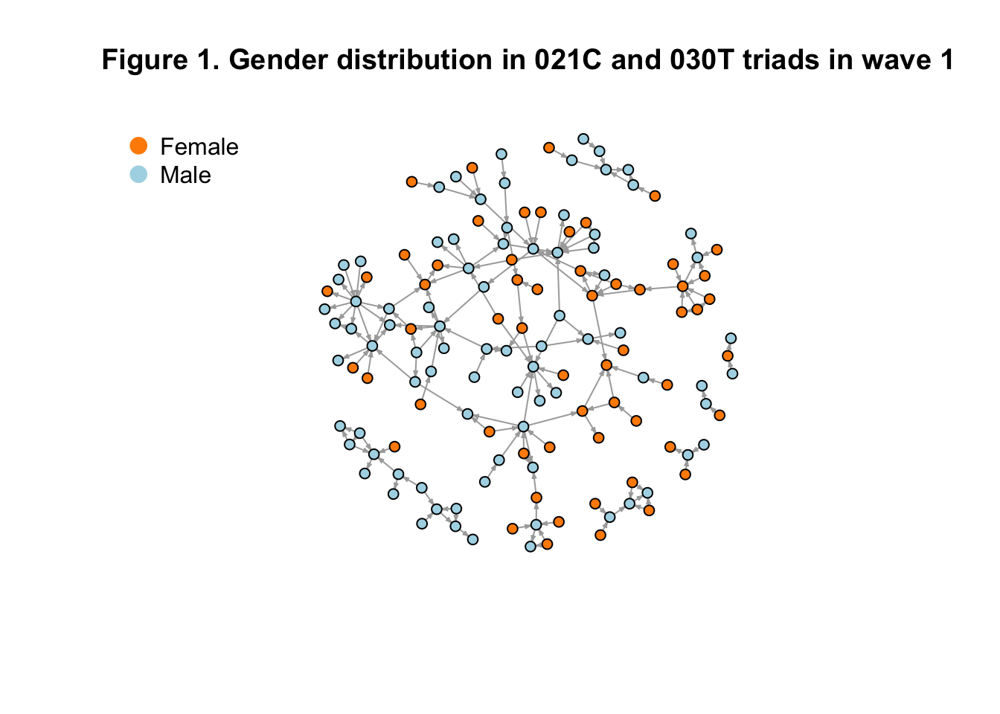

Last compiled on October, 2025
————————————————————————
For the descriptive analyses, I will first identify which triads occur in the network data, with particular attention to 021C and 030T triads (RQ1), and then examine the gender distribution within these specific triads (RQ2). The latter will be illustrated with a plot.
However, before exploring these patterns in detail, I will assess the overall gender distribution in the network, as well as key structural characteristics such as density, degree distribution, and clustering, to provide a clearer understanding of the network as a whole.
Load in the data
load("./data/processed/result_gender2.rda")In the study population, gender was nearly evenly distributed, with 49.70% men and 47.03% women. A small proportion of participants (3.36%, n = 22) had missing gender information.
result_gender2$demographics |>
mutate(gender = ifelse(is.na(gender), "missing", gender)) |>
count(gender) |>
mutate(percent = round(n / sum(n) * 100, 2))## # A tibble: 3 × 3
## gender n percent
## <chr> <int> <dbl>
## 1 female 317 47.0
## 2 male 335 49.7
## 3 missing 22 3.26To analyze various network characteristics, I first defined the two waves and verified that their matrices had matching dimensions, ensuring that no data were missing. On the diagonal of the network matrix, values should be zero since self-collaborations are not of interest. A few cases did not meet this criterion, so I set all diagonal entries in the adjacency matrix to zero. Finally, I confirmed that the matrices were not empty.
wave1 <- result_gender2$nets[1,,]
wave2 <- result_gender2$nets[2,,]
# filter out the waves of the object: we need to check our input
dim(wave1)
dim(wave2)
# you need to have 0 missing values:
sum(is.na(wave1))
sum(is.na(wave2))
#check the diagonal: all places should be 0
sum(diag(wave1)==0)
sum(diag(wave2)==0)
# a few people did work with themselves:
diag(wave1) <- 0
diag(wave2) <- 0
# everything should be 1 or 0:
sum(wave1>1)
sum(wave2>1)
# check if it's not empty: there are people with 1's
sum(wave1>0)
sum(wave2>0)
# Create Igraphs for analysis
g1 <- graph_from_adjacency_matrix(wave1, mode = "directed")
g2 <- graph_from_adjacency_matrix(wave2, mode = "directed")There are 674 researchers in the network; in Wave 1 there are 335 ties in total, and in Wave 2 there are 572, indicating that collaborative activity increased over time.
# number of nodes wave 1
vcount(g1)## [1] 674# number of nodes wave 2
vcount(g2)## [1] 674# number of edges wave 1
ecount(g1)## [1] 335# number of nodes wave 2
ecount(g2)## [1] 572The overall network density is low in both waves (Wave 1: 0.00074; Wave 2: 0.00126), indicating that only a small fraction of all possible collaborations occurrs. The slight increase from Wave 1 to Wave 2 suggests that collaborative activity became marginally more frequent over time, although part of this increase may reflect the inclusion of researchers who joined only in Wave 2 rather than a true rise in collaborations among existing members
# Wave 1 density
edge_density(g1)## [1] 0.0007385329# Wave 2 density
edge_density(g2)## [1] 0.001261017In Wave 1, many researchers had no incoming collaborations, with the most connected reseracher having 5 incoming ties. In Wave 2, connectivity increased slightly: the mean in-degree rose from 0.50 to 0.85, and the most connected researcher had 14 incoming ties. Overall, the network remains sparse, but collaborative activity appears to have increased over time
# Indegree Wave 1
indeg <- igraph::degree(g1, mode = "in")
summary(indeg)## Min. 1st Qu. Median Mean 3rd Qu. Max.
## 0.000 0.000 0.000 0.497 0.000 8.000# Indegree Wave 2
indeg <- igraph::degree(g2, mode = "in")
summary(indeg)## Min. 1st Qu. Median Mean 3rd Qu. Max.
## 0.0000 0.0000 0.0000 0.8487 1.0000 14.0000Out-degree distributions indicate that most researchers initiated few or no collaborations in both waves. In Wave 1, the average out-degree was 0.50, and the most active researcher initiated 10 collaborations. By Wave 2, average out-degree increased to 0.85, suggesting that more researchers engaged in initiating collaborations, even though the network remains relatively sparse overall.
# Outdegree wave 1
outdeg <- igraph::degree(g1, mode = "out")
summary(outdeg)## Min. 1st Qu. Median Mean 3rd Qu. Max.
## 0.000 0.000 0.000 0.497 1.000 10.000# Outdegree wave 2
outdeg <- igraph::degree(g2, mode = "out")
summary(outdeg)## Min. 1st Qu. Median Mean 3rd Qu. Max.
## 0.0000 0.0000 0.0000 0.8487 2.0000 7.0000The previous analyses suggest the presence of many isolates in the network. In Wave 1, 443 out of 674 researchers were isolates, while in Wave 2 the number decreased to 284. This substantial decrease is likely influenced by the inclusion of researchers who joined only in Wave 2, as these individuals would appear as isolates if they were artificially included in the Wave 1 network.
# Isolates Wave 1
row_sums1 <- rowSums(wave1)
col_sums1 <- colSums(wave1)
sum(row_sums1 == 0 & col_sums1 == 0)## [1] 443# Isolates Wave 2
row_sums2 <- rowSums(wave2)
col_sums2 <- colSums(wave2)
sum(row_sums2 == 0 & col_sums2 == 0)## [1] 284To answer the first research question, I conduct a triad census. This allows me to see which triadic structures, specifically 021C and 030T, appear in the observed network at Wave 1 and Wave 2.
In Wave 1, 021C triads occur 190 times, while 030T triads occur 23 times. This indicates that sequantial triads (021C) are much more common than transitive triads (030T) during the first observation period.
# Compute triad census (igraph version)
triads <- triad_census(g1)
# Define triad types
triad_types <- c(
"003", "012", "102", "021D", "021U", "021C",
"111D", "111U", "030T", "030C", "201",
"120D", "120U", "120C", "210", "300"
)
# Combine into a data frame
triad_table <- data.frame(
Triad = triad_types,
Count = as.numeric(triads)
)
triad_table## Triad Count
## 1 003 50611379
## 2 012 159304
## 3 102 31974
## 4 021D 127
## 5 021U 168
## 6 021C 190
## 7 111D 111
## 8 111U 100
## 9 030T 23
## 10 030C 2
## 11 201 19
## 12 120D 10
## 13 120U 7
## 14 120C 4
## 15 210 6
## 16 300 0In Wave 2, both triad types appeared more frequently: 021C occurred 287 times, and 030T appeared 56 times. While this increase suggests an expansion of triadic structures, the growth may partly reflect the addition of new individuals to the network rather than a substantive change in the underlying collaboration patterns.
# Compute triad census (igraph version)
triads <- triad_census(g2)
# Define triad types
triad_types <- c(
"003", "012", "102", "021D", "021U", "021C",
"111D", "111U", "030T", "030C", "201",
"120D", "120U", "120C", "210", "300"
)
# Combine into a data frame
triad_table <- data.frame(
Triad = triad_types,
Count = as.numeric(triads)
)
triad_table## Triad Count
## 1 003 50463584
## 2 012 295767
## 3 102 42648
## 4 021D 192
## 5 021U 557
## 6 021C 287
## 7 111D 180
## 8 111U 83
## 9 030T 56
## 10 030C 1
## 11 201 15
## 12 120D 19
## 13 120U 13
## 14 120C 11
## 15 210 9
## 16 300 2The answer to the first research question is that both 021C and 030T triadic structures are present in the network in both waves, with 021C consistently being the most frequent of the two. The rise in their occurrence from Wave 1 to Wave 2 points to a general increase in triadic connectivity, likely driven by network expansion rather than a shift in structural tendencies.
In order to answer the second research question, I need to identify the gender configurations of the triads 021C and 030T. In order to this, I first need to create a dataset in which the configurations are linked to actual nodes, rather than simply counting the number of configurations as a triad census does.
Creating this dataset is computationally intensive because, for each person, every possible triad combination must be recorded. Since individuals must be connected to at least one other person to be part of a possible triad, isolates can be removed from the dataset. This reduces the dataset to 231 people in the first wave, which significantly speeds up the for-each loop.
row_sums <- rowSums(wave1)
col_sums <- colSums(wave1)
# sum(row_sums != 0 | col_sums != 0)
# 231 people remain
row_sums <- rowSums(wave1)
col_sums <- colSums(wave1)
nonzero_ties <- which(row_sums != 0 | col_sums != 0)
gender <- result_gender2$demographics$gender
triads <- c("003", "012", "102", "021D", "021U", "021C", "111D", "111U", "030T", "030C", "201", "120D", "120U", "120C", "210", "300")
df <- data.frame()
df <- foreach(a1 = nonzero_ties, i = iterators::icount(), .combine = "rbind") %:%
foreach(a2 = nonzero_ties, j = iterators::icount(), .combine = "rbind") %:%
foreach(a3 = nonzero_ties, k = iterators::icount(), .combine = "rbind") %do% {
# Print progress for each a1 only
if (j == 1 && k == 1) { # only print once per a1
print(paste0("Processing outer node a1=", a1, " (i=", i, ")"))
}
if (i > j & j > k) { # iteration counts still control loop order
data.frame(
i = a1, j = a2, k = a3, # use a1, a2, a3 as node IDs
gender_i = gender[a1], # original node IDs for indexing
gender_j = gender[a2],
gender_k = gender[a3],
t1_ij = as.character(wave1[a1, a2]),
t1_ji = as.character(wave1[a2, a1]),
t1_ik = as.character(wave1[a1, a3]),
t1_ki = as.character(wave1[a3, a1]),
t1_jk = as.character(wave1[a2, a3]),
t1_kj = as.character(wave1[a3, a2]),
type = triads[which(sna::triad.census(wave1[c(a1, a2, a3), c(a1, a2, a3)]) == 1)]
)
}
}
# Optional: create triad name
df$name <- paste0(df$i, ".", df$j, ".", df$k)
write.csv(df, "./data/processed/wave1excel.csv", row.names = FALSE)Load the file
wave1excel <- read.csv("./data/processed/wave1excel.csv")
head(wave1excel[, 1:13])## i j k gender_i gender_j gender_k t1_ij t1_ji t1_ik t1_ki t1_jk t1_kj type
## 1 6 5 2 male female male 0 0 0 0 0 0 003
## 2 8 5 2 male female male 0 0 0 0 0 0 003
## 3 8 6 2 male male male 1 0 0 0 0 0 012
## 4 8 6 5 male male female 1 0 0 0 0 0 012
## 5 9 5 2 female female male 0 0 0 0 0 0 003
## 6 9 6 2 female male male 0 0 0 0 0 0 003021C
# only keep the triangles we are interested in
# also filter the people with gender = NA out (was one person)
df_filtered <- subset(
wave1excel,
type %in% c("021C", "030T") &
!is.na(gender_i) &
!is.na(gender_j) &
!is.na(gender_k)
)
write.csv(df, "./data/processed/df_filtered.csv", row.names = FALSE)
# Initialize counters for 021C
ffm <- 0
mmf <- 0
mmm <- 0
fff <- 0
# i am so sorry for this for loop :) I know it is horrible to look at but it works and I understand it
for (idx in 1:nrow(df_filtered)) {
# Tie variables
t_ij <- df_filtered$t1_ij[idx]
t_ji <- df_filtered$t1_ji[idx]
t_ik <- df_filtered$t1_ik[idx]
t_ki <- df_filtered$t1_ki[idx]
t_jk <- df_filtered$t1_jk[idx]
t_kj <- df_filtered$t1_kj[idx]
# Gender variables
g_i <- df_filtered$gender_i[idx]
g_j <- df_filtered$gender_j[idx]
g_k <- df_filtered$gender_k[idx]
# 1) i -> j -> k, open: i -> k must be 0 or NA
if (t_ij == 1 & t_jk == 1 & !(t_ik == 1)) {
if (g_i == "female" & g_j == "female" & g_k == "male") ffm <- ffm + 1
if (g_i == "male" & g_j == "male" & g_k == "female") mmf <- mmf + 1
if (g_i == "male" & g_j == "male" & g_k == "male") mmm <- mmm + 1
if (g_i == "female" & g_j == "female" & g_k == "female") fff <- fff + 1
}
# 2) i -> k -> j, open: i -> j must be 0 or NA
if (t_ik == 1 & t_kj == 1 & !(t_ij == 1)) {
if (g_i == "female" & g_k == "female" & g_j == "male") ffm <- ffm + 1
if (g_i == "male" & g_k == "male" & g_j == "female") mmf <- mmf + 1
if (g_i == "male" & g_k == "male" & g_j == "male") mmm <- mmm + 1
if (g_i == "female" & g_k == "female" & g_j == "female") fff <- fff + 1
}
# 3) j -> i -> k, open: j -> k must be 0 or NA
if (t_ji == 1 & t_ik == 1 & !(t_jk == 1)) {
if (g_j == "female" & g_i == "female" & g_k == "male") ffm <- ffm + 1
if (g_j == "male" & g_i == "male" & g_k == "female") mmf <- mmf + 1
if (g_j == "male" & g_i == "male" & g_k == "male") mmm <- mmm + 1
if (g_j == "female" & g_i == "female" & g_k == "female") fff <- fff + 1
}
# 4) j -> k -> i, open: j -> i must be 0 or NA
if (t_jk == 1 & t_ki == 1 & !(t_ji == 1)) {
if (g_j == "female" & g_k == "female" & g_i == "male") ffm <- ffm + 1
if (g_j == "male" & g_k == "male" & g_i == "female") mmf <- mmf + 1
if (g_j == "male" & g_k == "male" & g_i == "male") mmm <- mmm + 1
if (g_j == "female" & g_k == "female" & g_i == "female") fff <- fff + 1
}
# 5) k -> i -> j, open: k -> j must be 0 or NA
if (t_ki == 1 & t_ij == 1 & !(t_kj == 1)) {
if (g_k == "female" & g_i == "female" & g_j == "male") ffm <- ffm + 1
if (g_k == "male" & g_i == "male" & g_j == "female") mmf <- mmf + 1
if (g_k == "male" & g_i == "male" & g_j == "male") mmm <- mmm + 1
if (g_k == "female" & g_i == "female" & g_j == "female") fff <- fff + 1
}
# 6) k -> j -> i, open: k -> i must be 0 or NA
if (t_kj == 1 & t_ji == 1 & !(t_ki == 1)) {
if (g_k == "female" & g_j == "female" & g_i == "male") ffm <- ffm + 1
if (g_k == "male" & g_j == "male" & g_i == "female") mmf <- mmf + 1
if (g_k == "male" & g_j == "male" & g_i == "male") mmm <- mmm + 1
if (g_k == "female" & g_j == "female" & g_i == "female") fff <- fff + 1
}
}
# Print results
ffm## [1] 8mmf## [1] 16mmm## [1] 75fff## [1] 14030T
# Initialize counters for 030T
ffmclosed <- 0
mmfclosed <- 0
mmmclosed <- 0
fffclosed <- 0
for (idx in 1:nrow(df_filtered)) {
# Assign tie variables for readability
t_ij <- df_filtered$t1_ij[idx]
t_ji <- df_filtered$t1_ji[idx]
t_ik <- df_filtered$t1_ik[idx]
t_ki <- df_filtered$t1_ki[idx]
t_jk <- df_filtered$t1_jk[idx]
t_kj <- df_filtered$t1_kj[idx]
# Assign gender variables for readability
g_i <- df_filtered$gender_i[idx]
g_j <- df_filtered$gender_j[idx]
g_k <- df_filtered$gender_k[idx]
# 1) i -> j -> k, closed: i -> k exists
if (t_ij == 1 & t_jk == 1 & t_ik == 1) {
if (g_i == "female" & g_j == "female" & g_k == "male") ffmclosed <- ffmclosed + 1
if (g_i == "male" & g_j == "male" & g_k == "female") mmfclosed <- mmfclosed + 1
if (g_i == "male" & g_j == "male" & g_k == "male") mmmclosed <- mmmclosed + 1
if (g_i == "female" & g_j == "female" & g_k == "female") fffclosed <- fffclosed + 1
}
# 2) i -> k -> j, closed: i -> j exists
if (t_ik == 1 & t_kj == 1 & t_ij == 1) {
if (g_i == "female" & g_k == "female" & g_j == "male") ffmclosed <- ffmclosed + 1
if (g_i == "male" & g_k == "male" & g_j == "female") mmfclosed <- mmfclosed + 1
if (g_i == "male" & g_k == "male" & g_j == "male") mmmclosed <- mmmclosed + 1
if (g_i == "female" & g_k == "female" & g_j == "female") fffclosed <- fffclosed + 1
}
# 3) j -> i -> k, closed: j -> k exists
if (t_ji == 1 & t_ik == 1 & t_jk == 1) {
if (g_j == "female" & g_i == "female" & g_k == "male") ffmclosed <- ffmclosed + 1
if (g_j == "male" & g_i == "male" & g_k == "female") mmfclosed <- mmfclosed + 1
if (g_j == "male" & g_i == "male" & g_k == "male") mmmclosed <- mmmclosed + 1
if (g_j == "female" & g_i == "female" & g_k == "female") fffclosed <- fffclosed + 1
}
# 4) j -> k -> i, closed: j -> i exists
if (t_jk == 1 & t_ki == 1 & t_ji == 1) {
if (g_j == "female" & g_k == "female" & g_i == "male") ffmclosed <- ffmclosed + 1
if (g_j == "male" & g_k == "male" & g_i == "female") mmfclosed <- mmfclosed + 1
if (g_j == "male" & g_k == "male" & g_i == "male") mmmclosed <- mmmclosed + 1
if (g_j == "female" & g_k == "female" & g_i == "female") fffclosed <- fffclosed + 1
}
# 5) k -> i -> j, closed: k -> j exists
if (t_ki == 1 & t_ij == 1 & t_kj == 1) {
if (g_k == "female" & g_i == "female" & g_j == "male") ffmclosed <- ffmclosed + 1
if (g_k == "male" & g_i == "male" & g_j == "female") mmfclosed <- mmfclosed + 1
if (g_k == "male" & g_i == "male" & g_j == "male") mmmclosed <- mmmclosed + 1
if (g_k == "female" & g_i == "female" & g_j == "female") fffclosed <- fffclosed + 1
}
# 6) k -> j -> i, closed: k -> i exists
if (t_kj == 1 & t_ji == 1 & t_ki == 1) {
if (g_k == "female" & g_j == "female" & g_i == "male") ffmclosed <- ffmclosed + 1
if (g_k == "male" & g_j == "male" & g_i == "female") mmfclosed <- mmfclosed + 1
if (g_k == "male" & g_j == "male" & g_i == "male") mmmclosed <- mmmclosed + 1
if (g_k == "female" & g_j == "female" & g_i == "female") fffclosed <- fffclosed + 1
}
}
# Print results
ffmclosed## [1] 1mmfclosed## [1] 1mmmclosed## [1] 9fffclosed## [1] 5Based on the analyses above, the second research question can be addressed. This research question was descriptive, focusing on how gender is distributed across the triadic structures 021C and 031T observed in the network.

Although the overall network is approximately gender balanced (47.0% female and 49.7% male), the composition of the 021C and 031T triadic types in Wave 1 reveals a clear over-representation of all-male groups. In 021C triads, nearly 40% are composed entirely of men, compared to only 7% all-female triads. A similar pattern appears in 031T triads, where 39% are all-male and 22% all-female. Triads in which A and B are the same gender but C differs (female-female-male or male-male-female) are considerably less frequent, particularly those with a female majority (female-female-male).
For 031T triads specifically, same gender triads are especially pronounced. Approximately 61% of these triads consist entirely of one gender (either all-male or all-female), while only around 8% are of the female-female-male or male-male-female type. Given the overall gender balance of the network, this indicates that transitive or tightly interconnected triads tend to form within same-gender groups rather than across them, particularly in all-male triads.
Taken together, the results addressing the second research question reveal gendered structuring within the 021C and 031T triads, suggesting that these network configurations are shaped by gender-based tendencies in tie formation.
Now, to visualize the network of 021C triads and 030T triads I turn the dataset “df_filtered” from Wave 1 back into an adjaceny matrix and create a gender list for those people.
# Assuming your dataframe is called df_filtered
df3 <- df_filtered
# Identify all unique node IDs from i, j, k
nodes <- sort(unique(c(df3$i, df3$j, df3$k)))
# Create empty adjacency matrix
adj_mat <- matrix(0, nrow = length(nodes), ncol = length(nodes))
rownames(adj_mat) <- nodes
colnames(adj_mat) <- nodes
# Fill adjacency matrix
for (row in 1:nrow(df3)) {
i <- df3$i[row]
j <- df3$j[row]
k <- df3$k[row]
# Make sure to only assign if the column exists in the matrix
if (df3$t1_ij[row] == 1) adj_mat[as.character(i), as.character(j)] <- 1
if (df3$t1_ji[row] == 1) adj_mat[as.character(j), as.character(i)] <- 1
if (df3$t1_ik[row] == 1) adj_mat[as.character(i), as.character(k)] <- 1
if (df3$t1_ki[row] == 1) adj_mat[as.character(k), as.character(i)] <- 1
if (df3$t1_jk[row] == 1) adj_mat[as.character(j), as.character(k)] <- 1
if (df3$t1_kj[row] == 1) adj_mat[as.character(k), as.character(j)] <- 1
}
# View adjacency matrix
# View(adj_mat)
#check
#row_sums <- rowSums(adj_mat)
#col_sums <- colSums(adj_mat)
#sum(row_sums == 0 & col_sums == 0)
# Create gender vector matching the order of nodes in adj_mat
gender_vec <- sapply(rownames(adj_mat), function(node) {
node <- as.character(node)
# Check which column contains this node
if (node %in% df3$i) {
df3$gender_i[which(df3$i == node)[1]] # first occurrence
} else if (node %in% df3$j) {
df3$gender_j[which(df3$j == node)[1]]
} else if (node %in% df3$k) {
df3$gender_k[which(df3$k == node)[1]]
} else {
NA # fallback
}
})
# Check the result
# View(gender_vec)Figure 1 below visualizes the gender distribution in the network of individuals involved in 021C and 030T triads. Men appear more frequently in the network and are spread widely across various clusters. Several male-dominated clusters are visible, suggesting a stronger male presence in the formation of these triads. While women are less numerous, they also form noticeable clusters, often on the network’s periphery. Overall, the structure suggests gendered patterns of connection, with men occupying more central and interconnected positions, and women appearing more often in smaller, more localized groups.
# Create igraph object from adjacency matrix
g <- graph_from_adjacency_matrix(adj_mat, mode = "directed", diag = FALSE)
# Map gender to colors
# Adjust the values in gender_vec if they are not exactly "male"/"female"
node_colors <- ifelse(gender_vec == "female", "darkorange", "lightblue")
# Plot the graph
plot(g,
vertex.color = node_colors, # gender colors
vertex.label = NA, # remove labels
vertex.size = 5, # small nodes
edge.arrow.size = 0.2, # smaller arrowheads
layout = layout_with_fr(g), # pass the graph
main = "Figure 1. Gender distribution in 021C and 030T triads in wave 1")
# Add legend
legend("topleft", # position of legend
legend = c("Female", "Male"), # labels
col = c("darkorange", "lightblue"),# colors
pch = 19, # solid circle
pt.cex = 1.5, # size of the circles in legend
bty = "n") # no box around legend
The code I developed to analyze gender distribution within the 021C and 030T triads can also be applied to wave 2 by simply replacing every instance of “wave1” with “wave2.” However, because wave 2 contains fewer isolates, the for-each loop would need to iterate over a much larger number of individuals. Based on my calculations, this process would take approximately three days to complete. As I did not have three consecutive days during which I did not need to use R, running the full analysis for Wave 2 was not feasible at this time. I hope my demonstration of how I approached this for Wave 1 suffices for now.